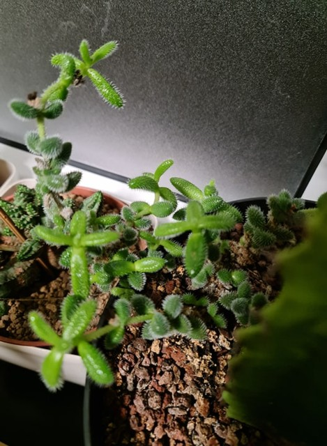
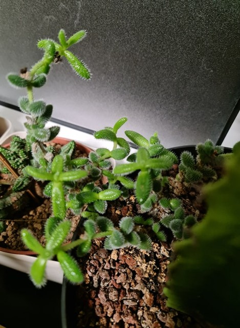
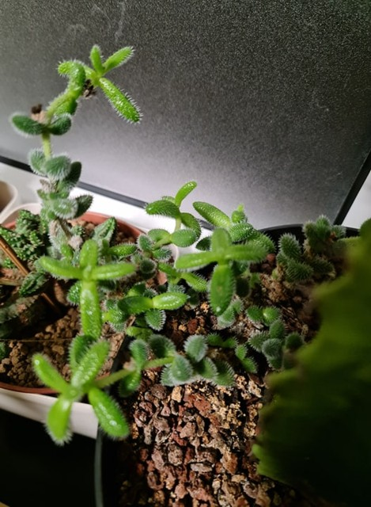

| Nom et photo | Exposition | Arrosage | Rempotage | Saisons |
|---|---|---|---|---|
| Delosperma echinatum |
Très lumineuse avec soleil direct du matin et du soir. Été au soleil après acclimatation. | Pas besoin de beaucoup d'eau, attendre que le sol sèche entre 2 arrosages. Pas d'arrosage en hiver si au frais. | Terreau mélangé avec sable de rivière et gravillons pour un bon draînage. Pot de petite taille suffisant. | Été: Intérieur et extérieur. Hiver: Intérieur ambiante ou dans une pièce fraîche. |
